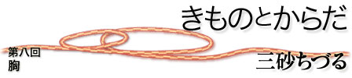

|  |
| 女性がブラジャーを抑圧の対象として燃やしたのは、フェミニズム運動のもうひとつ前、ウーマンリブのころのことだった、と記憶している。女性への抑圧を許さない、と声を上げる女性たちは、過激だったけれども、とても生き生きとしていた、と思い出す。女性の胸を締め付けることの理不尽さを女性たちは訴えたし、それはほんとうにもっともなことに思えた。いまや、当たり前のように日本女性たちは毎日ブラジャーを身に着けているが、いつの間に、ブラジャーは抑圧の対象ではなくなり、「おしゃれ」で｢セクシー｣なランジェリーになったのだろうか。こんなに律儀にブラジャーを着け続けていて、それがあたりまえのようになってしまって、本当にいいのだろうか、と考える。 ヨーロッパに行くとブラジャーを取っている人が結構多い、と思う。昨年、昔住んでいた家を訪ねて、子どもたちをつれてロンドンに行った。旅行当事、中一だった息子は｢ママ、何でここはブラジャーしない人がこんなに多いの？｣といっていた。なかなかよいところに目をつける中学生であり、頼もしい。若い人も、結構年配の方も、夏だったがTシャツの下にあきらかにブラジャーを身に着けないで、堂々と歩いていた。私たちは、熱帯ブラジルにも長く住んでいたが、そこでもそういえば、ブラジャーをつけない女性は多かった。タンクトップや、肩の大きくあいたシャツを着ている女性は、ブラジャーの紐がでるから、ブラジャーはあっさり、つけていない。たしかに乳首の線はでないわけではないのだが、日本で売っている乳首の上に貼る丸いシールのようなこざかしいものを考え付く人は、生産者にも消費者にもいないらしく、みんな堂々と胸をはって歩いていた。ぴったりしたタンクトップを着ていると、乳首の形はそんなに目立つものでもない、と思った。 現在、西洋下着は、その起源の西洋社会では、とる人も多い中、日本女性は律儀にブラジャーを着け続けているわけである。そういえば、ヨーロッパ女性やラテンアメリカ女性と、何度も一緒に着替えをする機会があったが｢ガードル｣というものをつけている人に、いまだ出会ったことがない。今となっては、いったい何が西洋下着なのかもわからなくなってきた。 きものを着始めると、ブラジャーがいかに不便なものだったかがわかる。たまに洋服をきる必要があって、ブラジャーを使うと、とにかく、肩ひもが気になって仕方がない。肩に意識が集まってしまうので、肩が凝ってしまう。背中のフック辺りも、とても気になる。胸が押さえられている、としみじみ感じて、こんなもの燃やしてしまえばよいのだ、という思いがすこしも過激に思えなくなる。 きものを着ていると、胸は帯の上にふわっとのっている。おさえられもしていないし、肩ひももない。胸がのびのびしている。肌襦袢、長襦袢をつけているので、洋服のときのようにからだの線が出ないから、ラインも気にならない。 なんとなく、こころもち胸が大きくなるような気がするのは、抑圧がすくないからかなあ、と思う。 戦後しばらく、おっぱいより粉ミルクがすすめられた不幸な時期が日本には長くあった。今の3,40代くらいはほとんど粉ミルクで育てられており、おっぱいをもらっていない人が多い。つまり、病院出産第一世代の6,７０代の女性はおっぱいをほとんどあげていない。しかし、現在では、幸いにも赤ちゃんにはおっぱいのほうがずっとよいのだ、という認識が広まってきた。ところが助産婦さんによると、今、実際におっぱいをあげようとしても、おっぱいにトラブルがある人が多いのだという。陥没乳頭や扁平乳頭などのように、乳首がへこんでしまったり、ぺったんこだったりして、赤ちゃんがうまく乳首に吸い付けるようになっていない人が多いらしい。年配の助産婦さんによると、昔はこういうことは本当に少なかった、ということである。 根拠はないけれど、どうもこれはブラジャーのせいではないか、と助産婦さんもわたしも、にらんでいる。思春期からずっと毎日、来る日も来る日も胸をブラジャーで押さえつけている。最近のブラジャーは押さえつけて苦しい、というものにはなっていなくて、苦しくない、と感じるものも多いようだが、乳首の形がなんとかみえないようにしていることにはかわりはない。乳首の形を「なかったもの」のようにしてくらしていると、本当に乳首の形がないようなおっぱいになってしまうのではないのだろうか。きものをきているころの女性のおっぱいは、肌襦袢のなかで、おさえられることもなかった。あるがままの姿で、しかも、わりと自由に動くようになっているから、適度に刺激を受けて、乳首も乳首らしい形になっていたようだ。きものから洋服になって、女性を抑圧するような服装ではなくなった、といわれることが、無批判に受け入れられて久しい。ブラジャーとガードルとボディスーツに身を固めた日本女性は、からだを抑圧する、という意味さえ今では問わなくなってしまっているのかもしれない。 三砂ちづる（みさご・ちづる） 疫学者 |